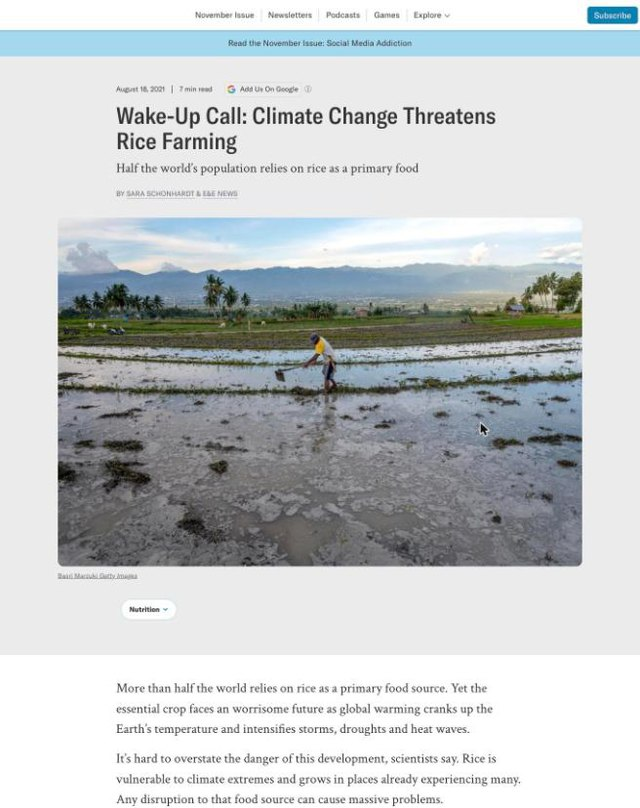
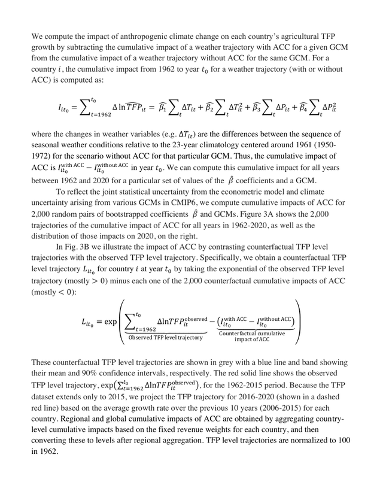
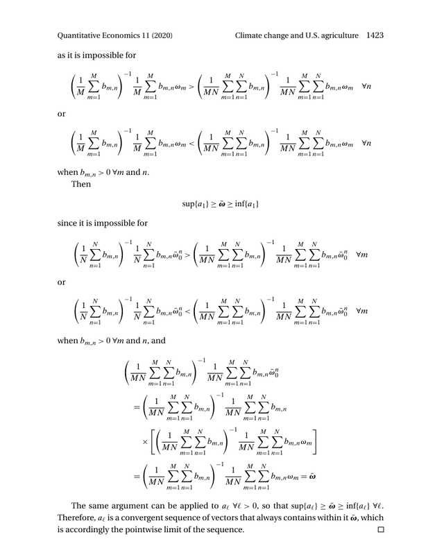
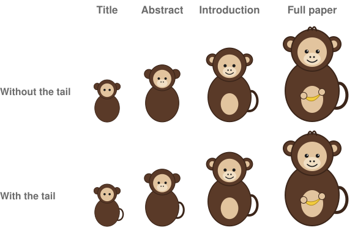
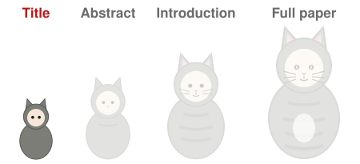
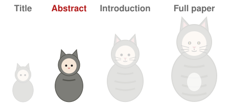
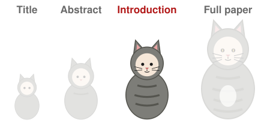
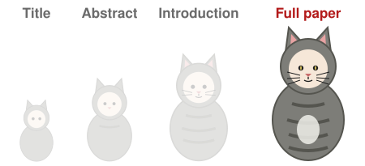
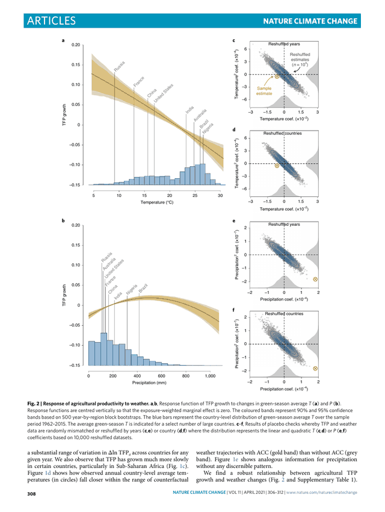
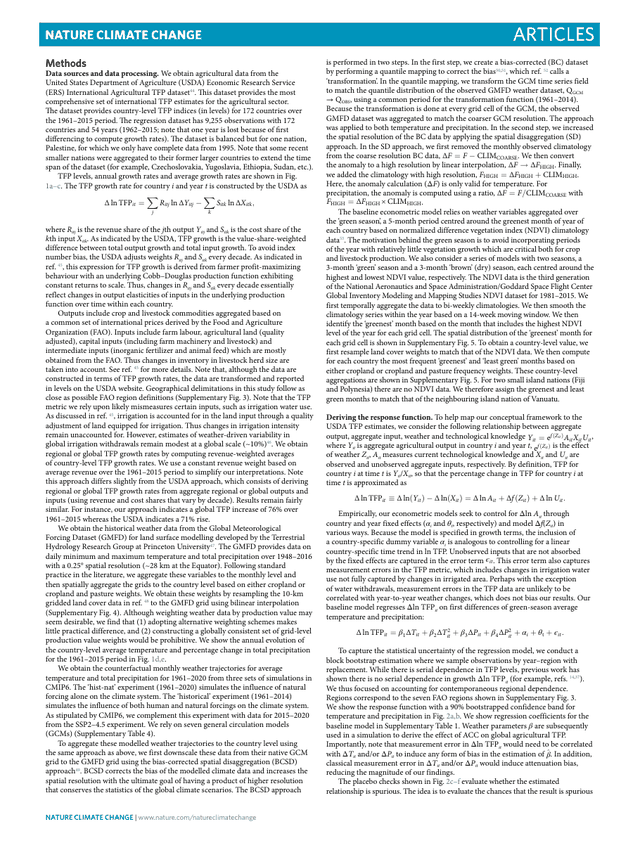

AEM 6991
MPS Capstone Project I
Prof. Ariel Ortiz-Bobea
10 · Writing
Wednesday, October 28, 2026

Outline
- Your readers. Skimmers, engaged readers and deep readers.
- Nested versions. The title, abstract, introduction and full paper, each for its reader.
- The structure readers expect. The standard order of a paper, a memo and a proposal.
- One idea per paragraph. Topic sentences, checked with a reverse outline.
- Keeping the reader on your path. Answering doubts where they arise, and bringing back readers who drift.
- Plain and neutral sentences. Active verbs, numbers in place of adjectives, one term for one thing.
- The mechanics of writing a paper. The sections, then one bullet per paragraph, then the prose.
Handout: the writing guide, on this meeting’s page.
1. Your readers
Most panelists read only part of a grant application
- The National Institutes of Health (NIH) funds US medical research through review panels.
- About 20 panelists score each application.
- At least three assigned reviewers read it closely.
- The rest most likely skim the abstract, the one-page Specific Aims and the significance section.
- One NIH institute tells applicants to write those parts for a reader of Scientific American, a popular science magazine.
One topic written at three levels

For the public: a popular science magazine

For economists: the methods of the 2021 preprint

For econometricians: a proof in a methods paper
Schonhardt and E&E News (2021), Wake-Up Call: Climate Change Threatens Rice Farming, Scientific American, August 18. Ortiz-Bobea, Ault, Carrillo, Chambers and Lobell (2020), The Historical Impact of Anthropogenic Climate Change on Global Agricultural Productivity, arXiv 2007.10415, page 11. Keane and Neal (2020), Climate change and U.S. agriculture: Accounting for multidimensional slope heterogeneity in panel data, Quantitative Economics 11, 1391–1429, page 1423 (CC BY-NC 4.0).
Readers range from skimmers to deep readers
| In research | In an organization | |
|---|---|---|
| Skimmers read the title and the summary, then stop | Someone searching for papers; a student | The executive who needs the big picture |
| Engaged readers read the introduction and the main results | Someone writing a literature review; a researcher deciding whether the paper matters to them | The manager who acts on the recommendation |
| Deep readers read the methods and the appendix | A peer who follows the work; a critic; a referee | The analyst who checks the numbers |
- The mix of readers depends on the setting.
- Some details are never read, and they are written for the few who need them.
Each part of a paper has its own reader
- The title reaches skimmers. It has no jargon and no acronyms.
- The abstract reaches skimmers and engaged readers. Each technical term is spelled out.
- The introduction reaches engaged readers. It uses the field’s terms and defines each one.
- The methods and appendix reach deep readers. They carry the full technical detail.
- The technical level rises as the reader goes deeper.
One paper titled for three audiences
| Audience | Where it appeared | Title |
|---|---|---|
| The public | Cornell Chronicle, 2021 | “Climate change has cost 7 years of ag productivity growth” |
| Scientists in many fields | Nature Climate Change, 2021 | “Anthropogenic climate change has slowed global agricultural productivity growth” |
| Economists in the field | arXiv working paper, 2020 | “The Historical Impact of Anthropogenic Climate Change on Global Agricultural Productivity” |
- The public title drops the word anthropogenic and states the loss in years of growth.
- The journal title states the finding.
- The working-paper title names the topic for readers who know the field.
Friedlander (2021), Cornell Chronicle. Ortiz-Bobea, Ault, Carrillo, Chambers and Lobell (2021), Nature Climate Change 11, 306–312. Ortiz-Bobea et al. (2020), arXiv 2007.10415.
The journal sets the reader and the framing
- Bloom and coauthors ran two randomized experiments at Ctrip, a Chinese travel agency now called Trip.com.
For economists: Quarterly Journal of Economics, 2015
- “Does Working from Home Work? Evidence from a Chinese Experiment”
- Call-center employees worked from home or in the office.
- The abstract opens on an incentive problem: employees may shirk at home.
- It splits the gain in performance into its sources.
For scientists in many fields: Nature, 2024
- “Hybrid working from home improves retention without damaging performance”
- Employees with university degrees worked a hybrid schedule.
- The abstract opens: “Working from home has become standard for employees with a university degree.”
- It ends on a practice firms can adopt.
Bloom, Liang, Roberts and Ying (2015), Does Working from Home Work? Evidence from a Chinese Experiment, Quarterly Journal of Economics 130(1), 165–218. Bloom, Han and Liang (2024), Hybrid working from home improves retention without damaging performance, Nature 630, 920–925 (CC BY 4.0).
2. Nested versions
Internists reported reading only the abstract of most articles
- In 1998, 264 of 399 US internists (doctors of internal medicine) returned a mailed survey on their journal reading.
- They reported reading only the abstract for 63% of the articles they read.
- For those articles, the abstract was the paper.
What is each of these?
A title should fit only your paper

- Without the tail, the two small dolls fit a bear as well as a monkey.
- A topic title fits many papers:
Climate change and global agricultural productivity
- The published title fits one: “Anthropogenic climate change has slowed global agricultural productivity growth”
- Each version keeps the feature that identifies the paper.
The shortest version reaches the most readers
- Economics journals cap abstracts at 100 words (American Economic Review, Journal of Finance) or 150 (Econometrica).
- The US Government Accountability Office (GAO) publishes each report as Fast Facts, a two-page Highlights and the full report.
AER submission guidelines; Journal of Finance submission guidelines; Econometrica information for authors; GAO, for example GAO-24-107146.
The title of the 2021 paper

“Anthropogenic climate change has slowed global agricultural productivity growth”
- Nine words, no acronyms. It states the finding.
Ortiz-Bobea, Ault, Carrillo, Chambers and Lobell (2021), Nature Climate Change 11, 306–312.
The abstract of the 2021 paper

“Agricultural research has fostered productivity growth, but the historical influence of anthropogenic climate change (ACC) on that growth has not been quantified. We develop a robust econometric model of weather effects on global agricultural total factor productivity (TFP) and combine this model with counterfactual climate scenarios to evaluate impacts of past climate trends on TFP. Our baseline model indicates that ACC has reduced global agricultural TFP by about 21% since 1961, a slowdown that is equivalent to losing the last 7 years of productivity growth. The effect is substantially more severe (a reduction of ~26–34%) in warmer regions such as Africa and Latin America and the Caribbean. We also find that global agriculture has grown more vulnerable to ongoing climate change.”
- 117 words in five sentences: the gap, the design, the finding with its size, where it is larger, and what is new.
Ortiz-Bobea et al. (2021), Nature Climate Change 11, 306–312, abstract.
The introduction of the 2021 paper

- “Enhancing agricultural productivity is vital to lifting global living standards and advancing sustainable food production in the face of escalating challenges to agriculture and the environment.”
- “Research to date on the historical impact of ACC focuses overwhelmingly on yields of major cereal crops or on total gross domestic product.”
- “We quantify the impact of ACC on global agricultural productivity since 1961.”
- The first sentence of each of its three paragraphs, 362 words in all.
- Paragraph 3 opens with the question.
Ortiz-Bobea et al. (2021), Nature Climate Change 11, 306–312, introduction.
The full 2021 paper


A results page

The methods
Ortiz-Bobea et al. (2021), Nature Climate Change 11, 306–312, page 308 and the methods.
3. The structure readers expect
Researchers put shuffled paragraphs back in the right section
- Dillon took two articles from a journal in the participants’ own field and removed every second paragraph.
- Twelve human factors researchers sorted the rest, shuffled, into introduction, method, results and discussion.
- They put 82.6% in the right section.
- A common error confused the introduction with the discussion.
How an empirical economics paper is organized
- TitleStates the finding
- AbstractThe question, the data and design, the finding with its size
- IntroductionThe funnel to the question, the finding and its size, the closest papers
- Setting and dataWhere and when, and what one row describes
- Empirical strategyThe design and its identifying assumption: what must hold for the estimate to measure the effect
- ResultsEach table introduced by its point
- Threats to validityWhat could break the design, and the checks
- ConclusionThe message again, shorter
- The red boxes are the versions most readers stop at.
Dudenhefer (2014), A Guide to Writing in Economics, Duke University. Head, The Introduction Formula.
How an applied theory paper is organized
- TitleStates the finding
- AbstractThe question, the model’s prediction, the finding
- IntroductionThe funnel to the question, the finding, the closest papers
- Theoretical frameworkA model that yields the testable prediction
- Empirical frameworkThe regression for each part of the prediction
- DataAnd descriptive statistics
- ResultsEach estimate read back through the model
- ConclusionThe message again, shorter
- The model comes before the evidence and says what to estimate.
- Bellemare’s rule: the model’s prediction maps one to one onto the empirical framework.
- Ortiz-Bobea (2020) studied how climate affects US farmland. The usual estimate regresses farmland prices on climate across counties.
- The model values farmland as farming income plus the option to convert it to other uses.
- It predicts that farmland prices and cash rents give the same climate effect only where conversion is unlikely.
- The empirical sections estimate the effect from prices, then from rents, and compare them.
Bellemare (2018), Between the Introduction and the Conclusion: The “Middle Bits” Formula for Applied Papers, blog post; expanded in Doing Economics (MIT Press, 2022). Ortiz-Bobea (2020), The Role of Nonfarm Influences in Ricardian Estimates of Climate Change Impacts on US Agriculture, American Journal of Agricultural Economics 102(3), 934–959.
The funnel runs from the literature to your question
- The first paragraph narrows from the field to what is missing. Paragraph 3 opens with the question.
- In your proposal, the funnel starts at the decision your reader faces.
Ortiz-Bobea et al. (2021), Nature Climate Change 11, 306–312, introduction, paragraphs 1 and 3.
How a memo is organized
- Subject lineStates the bottom line
- Bottom lineThe conclusion and the decision asked for
- BackgroundOnly what this reader needs
- EvidenceMost important first
- Options and risks
- Next steps
- Bottom line up front (BLUF): the first sentence gives the conclusion.
- Suchan and Colucci gave 262 US Navy officers documents in a high-impact style or a bureaucratic style.
- High-impact meant the bottom line first, short paragraphs, headings and plain sentences.
- The high-impact documents took 17–23% less time to read and were understood better.
Suchan and Colucci (1989), An analysis of communication efficiency between high-impact and bureaucratic written communication, Management Communication Quarterly 2(4), 454–484. Purdue OWL, Parts of a Memo.
How a research proposal is organized
- Your proposal is a plan: about five pages that someone could pick up and execute in January.
- The thirteen headings are the course’s, from the syllabus.
- Page one answers three questions any funder asks: “What are we going to learn … that we do not know now? Why is it worth knowing? How will we know that the conclusions are valid?”
- Przeworski and Salomon wrote these for applicants to fellowships of the Social Science Research Council (SSRC), a US funder of social science.
- Preliminary evidence is optional. Use it only to show that the data exist and can answer the question.
- Research problem
- Practical justification
- What is already known
- Conceptual model
- Methodological approach
- Study sample
- Data and access
- Internal validity
- External validity
- Limitations and self-critique
- Work plan
- Research ethics
- References
The syllabus, What you are graded against and the deliverables table. Przeworski and Salomon (1988, rev. 1995), On the Art of Writing Proposals: Some Candid Suggestions for Applicants to Social Science Research Council Competitions.
Page one of the “Target boycott” proposal
- In 2023 conservative shoppers boycotted Target over its Pride merchandise. In 2025 shoppers boycotted it after it ended its diversity goals.
| What we will learn | How much more store visits fell in counties whose politics matched each boycott |
| Why it is worth knowing | A retailer’s marketing team decides where to spend to win shoppers back |
| How we will know | Compare stores in the most and least Republican thirds of counties, week by week, 20 weeks either side of each boycott |
- This is difference-in-differences: the change in one group against the change in another. It assumes both groups would have followed parallel paths without the boycotts.
- The gap should flip sign between 2023 and 2025.
Written for this slide from the “Target boycott” project description.
4. One idea per paragraph
Each paragraph makes one point
- A topic sentence states the paragraph’s point. The other sentences support it.
- Body paragraphs open with their point. The opening funnel of an introduction ends with it.
- A reverse outline checks a draft: write one sentence summing up each paragraph.
- A paragraph that needs two sentences holds two ideas. Split it.
- A summary that matches a later sentence means the point is buried. Move that sentence up.
This paragraph states its point first
- Ray and coauthors (2019) estimated how recent climate change has affected the yields of the ten largest crops worldwide. This is their closing paragraph.
“Our findings here illustrate that climate change has potentially already affected global production of the ten largest crops and the production of consumable food calories in specific countries and globally. The approach used here complements the long-range projections, avoids many of the challenges faced by process-based models, and analyzes a broader set of crops. Although recent climate change has likely reduced overall consumable food calories in these ten crops by ~1% (or ~0.5% across all food calories), there is much variability among crops and regions. These findings can be used to target interventions for adaptation to climate change through better management, crop breeding, and switching crops as climate continues to evolve.”
What is this paragraph’s point in one sentence?
- Elmallah and coauthors (2023) compared sale prices of homes near and far from large solar farms in six US states. This is the first paragraph of their introduction.
“Large-scale photovoltaic projects (LSPVP), defined here as ground-mounted photovoltaic generation facilities with at least 1 MW of DC generation capacity, are an increasingly prevalent source of renewable energy. LSPVPs accounted for over 60% of all new solar capacity in the United States in 2021, and, as the largest resource by capacity in interconnection queues, are projected to continue growing (Bolinger et al., 2021). However, the local economic impacts of LSPVPs are poorly understood (Mai et al., 2014), despite surveys showing that local public support for large-scale solar is strongly related to perceived economic impacts, including the impact on property values (Carlisle et al., 2014). Concerns surrounding the property value impacts of solar power are reflected in solar industry and environmental advocacy communication that challenge the conception that solar power reduces property values (Center for Energy Education, n.d.; Solar Energy Industries Association, 2019), and in attempts by neighbors of solar plants to claim solar panels as a private nuisance (Westgate, 2017).”
One sentence for that paragraph
- One summary: large solar farms are spreading fast, but their effect on nearby home values, which shapes local support, is poorly understood.
- The point arrives in sentence 3, after However.
- This paragraph opens the introduction, so it is a funnel and ends on its point.
- Ray and coauthors’ paragraph closes a paper, so it opens on its point.
Elmallah et al. (2023), Energy Policy 175, 113425, introduction, paragraph 1.
A reverse outline of a whole introduction
5. Keeping the reader on your path
You choose the reader’s path
- You decide what the reader reads and in what order. The reader’s thoughts along the way are theirs.
- In laboratory studies, adults read texts and were asked at random moments where their mind was.
- Minds wandered 20 to 30% of the time. More wandering went with lower comprehension.
D’Mello and Mills (2021), Mind wandering during reading: An interdisciplinary and integrative review, Language and Linguistics Compass 15(4), e12412. Bonifacci, Viroli, Vassura, Colombini and Desideri (2023), The relationship between mind wandering and reading comprehension: A meta-analysis, Psychonomic Bulletin & Review 30(1), 40–59 (CC BY 4.0).
Where would a skeptical reader stop following?
We ask whether a new solar farm lowers the sale prices of homes within one kilometer2 of it in upstate New York3. Our sample covers the 431 farms that began operating between 2016 and 2023. Developers often build on cheap farmland at the edge of a village.1 We compare prices near each farm with prices 2 to 5 kilometers away, before and after it opens.
1. A criticism. Were prices at the village edge already growing more slowly?
2. A variation. Does a farm screened by trees lower prices as much?
3. A limitation. Would this hold outside upstate New York?
Answer the doubt in the next sentence
- An off-ramp is a point where a doubt pulls the reader off your path.
We ask whether a new solar farm lowers the sale prices of homes within one kilometer of it in upstate New York. Our sample covers the 431 farms that began operating between 2016 and 2023. Developers often build on cheap farmland at the edge of a village. Section 4 checks whether prices there were already growing more slowly. We compare prices near each farm with prices 2 to 5 kilometers away, before and after it opens.
- One short sentence is enough. Name the doubt and point to where the paper handles it.
- O’Keefe pooled 107 comparisons of messages that did or did not raise an opposing argument. Raising it and refuting it persuaded slightly more than ignoring it. Raising it without refuting it persuaded less.
- Solution: answer each doubt briefly, right after the claim that raises it, and leave the full check for its own section.
On-ramps bring drifting readers back
- An on-ramp is a “you are here” sign: one sentence that tells a reader who drifted where this section fits in the whole argument.
| Without an on-ramp | Sale records come from ATTOM through Dewey, Cornell’s data platform. We keep arm’s-length sales of single-family homes and drop sales below $10,000. Each address is geocoded and matched to the nearest farm. |
| With an on-ramp | To learn whether a new solar farm lowers the prices of nearby homes, we need the sale prices of homes near and far from each farm, before and after it opens. County averages would mix the two groups, so we need each sale with its address and date. We obtain these records from ATTOM through Dewey, Cornell’s data platform. |
- After their minds wandered, readers went back and reread nearly half the time, usually a line or two.
- Talks need on-ramps too, most of all long ones: at each new part, say where it fits.
- Solution: open each section with one sentence that tells the reader how it fits in the overall argument.
Four ways off the path and their solutions
| Off the path | Solution | |
|---|---|---|
| 1 | A criticism of the design | Answer it briefly in the next sentence, and point to the full check |
| 2 | A variation the reader wonders about | Say which cases the design covers |
| 3 | A limitation on where the result applies | State it yourself, once, in the limitations section |
| 4 | A reader who drifted | Open each section with a “you are here” sentence: how it fits in the overall argument |
6. Plain and neutral sentences
Hype words spread in funded grant abstracts
- A hype word is an adjective or adverb that praises the work.
| With hype words | We provide novel evidence on a critical question: the key role of solar farms in dramatically shaping local home values. |
| With the comparison | We estimate how much a new solar farm changes the sale prices of homes within one kilometer, in New York, where earlier studies have not looked. |
- Millar, Batalo and Budgell counted hype words in NIH-funded grant abstracts. The share with at least one rose from 72% in 1985 to 97% in 2020.
- Some journals forbid claims to be first. Since 2017 Nature Human Behaviour has made authors remove them before acceptance.
- Solution: replace each hype word with the comparison that shows it, and let the gap show that the work is new.
Millar, Batalo and Budgell (2022), Trends in the use of promotional language (hype) in abstracts of successful National Institutes of Health grant applications, 1985–2020, JAMA Network Open 5(8), e2228676. Nature Human Behaviour (2021), Not the first, not the best, editorial, 5, 175.
Hype words went with higher odds of funding
- Qiu and coauthors studied 11,535 grant applications: 2,439 to NIH from Northwestern faculty (2007–2019) and 9,096 to the Novo Nordisk Foundation, a Danish medical research funder (2015–2022).
- They call them promotional words. Each extra percentage point went with about 1.5 times the odds of funding.
- The data are observational. Work that is new may draw both the words and the funding.
- A reviewer cannot check novel without a comparison.
- Solution: say once what is new, compared with the closest published study.
Give the number in place of the adjective
| Invented for this slide | Target’s sales collapsed dramatically after the boycott. |
| The “Target boycott” project description, verbatim | “comparable store sales fell 4.3 percent in the second quarter of 2023” |
The first sentence is made up to show the problem. The second is how the project description reports the figure, taken from Target’s earnings release.
Comparable store sales are in-store sales at stores open at least 13 months, against the same quarter a year earlier.
The number, its unit, the comparison and the period let the reader judge the size.
Target Corporation (2023), second-quarter earnings release, Form 8-K, Exhibit 99, August 16. “Target boycott” project description.
Three rules for verbs
- Every sentence below is invented to show the rule. None corrects a published sentence.
| Rule | Before (invented) | After (invented) | |
|---|---|---|---|
| 1 | Active voice: the subject does the action, with we for the team | Sale records were obtained from ATTOM through Dewey, Cornell’s data platform. | We obtained sale records from ATTOM through Dewey, Cornell’s data platform. |
| 2 | Present tense for what a paper or table shows, past for what happened in its sample, future for your plans | Gaur and Lang (2023) found that solar farms lower home values. | Gaur and Lang (2023) find that homes in Massachusetts and Rhode Island within 0.6 miles of a solar farm lost 1.5 to 3.6 percent of their value. |
| 3 | Verbs in place of nominalizations, nouns made from verbs | We conduct an analysis of sale prices. | We analyze sale prices. |
Three rules for terms and claims
- Every sentence below is invented to show the rule. None corrects a published sentence.
| Rule | Before (invented) | After (invented) | |
|---|---|---|---|
| 1 | One term for one thing | Solar farm, array, facility and project in one paragraph read as four things. | Solar farm, every time. |
| 2 | Name the study and its setting | The literature finds that solar farms lower home values. | Elmallah et al. (2023) find that, across more than 1,500 solar projects in six states, homes within half a mile sold for about 1.5 percent less than homes two to four miles away. |
| 3 | Hedge once, on the interpretation, where the doubt lies | Visits may have fallen somewhat more in Republican counties, which possibly suggests the boycott may have mattered. | Visits fell 2.1 percent more in the most Republican third of counties. The gap may reflect the boycott, or a local shock in the same weeks. |
The numbers in row 2 are Elmallah et al.’s finding; the 2.1 percent in row 3 is made up. McCloskey (1985), Economical Writing, Economic Inquiry 23(2), 187–222, rule 19. Elmallah, Hoen, Fujita, Robson and Brunner (2023), Shedding light on large-scale solar impacts, Energy Policy 175, 113425.
Cite what a reader could dispute
- Cite any claim a reader could dispute. Mark a hypothesis or an opinion as yours, and point your own results to a table.
| Sentence (invented) | What it is | What it needs | |
|---|---|---|---|
| 1 | Target’s comparable store sales fell 4.3 percent in the second quarter of 2023 (Target 2023). | A number someone could check | The source |
| 2 | Homes within half a mile of a solar farm sold for about 1.5 percent less than homes two to four miles away (Elmallah et al. 2023). | Another study’s finding | The study |
| 3 | Solar panels turn sunlight into electricity. | Common knowledge | Nothing |
| 4 | We expect larger effects where farms replace open fields, since neighbors lose a view. | Our hypothesis | “We expect”, and the evidence behind it if any |
| 5 | Visits fell 2.1 percent more in the most Republican third of counties (table 2). | Our own result | The table or figure |
The numbers in rows 1 and 2 are from the cited sources; the 2.1 percent in row 5 is made up. Target Corporation (2023), second-quarter earnings release. Elmallah et al. (2023), Energy Policy 175, 113425.
7. The mechanics of writing a paper
A paper is written in three passes
- SectionsThe headings the document needs, in order
- OutlineUnder each heading, one bullet per paragraph: its topic sentence, and the tables, figures and sources it will cite
- ProseEach bullet becomes a paragraph
- Plan code the same way, from the big picture down to small steps.
- Every paragraph of the draft has its bullet in the outline.
- Your proposal outline, due November 11, is pass 2.
Meeting 5: “Plan first and work in small steps” and “You write the outline”.
The 2021 paper rebuilt as an outline
Ortiz-Bobea, Ault, Carrillo, Chambers and Lobell (2020), arXiv:2007.10415, main text of the version first submitted. Published in Nature Climate Change 11, 306–312 (2021).
The outline sets the length
- Plan about 150 words for each paragraph.
- The number of bullets then gives the length of the draft.
| Section of the 2021 paper | Paragraphs | At 150 words each | Words written |
|---|---|---|---|
| Introduction | 3 | 450 | 357 |
| Framework and model | 2 | 300 | 322 |
| Data | 1 | 150 | 113 |
| How TFP responds to weather | 3 | 450 | 448 |
| Impact of climate change since 1961 | 3 | 450 | 315 |
| Checks | 3 | 450 | 437 |
| Caveats and conclusion | 1 | 150 | 272 |
| Total | 16 | 2,400 | 2,264 |
Write each paragraph from its bullet
- Open with the bullet’s point, in the first sentence.
- Answer each doubt in the sentence that follows it.
- Open each section with a “you are here” sentence.
- Use precise terms and numbers throughout.
Bullet 9, written for this slide
Weather has no detectable lasting effect on TFP growth. Evidence: lags up to 10 years (Tab. S2).
Paragraph 9 as submitted
“We find no evidence that weather has a persistent effect on TFP growth. Our baseline specification only considers contemporaneous weather effects. But a weather shock could conceivably affect TFP growth in future years, for example if growth is faster following a year with bad weather. This would result in cumulative weather events affecting TFP growth. By introducing lags for weather in prior years, we cannot reject the hypothesis that the cumulative effect of changes in weather conditions up to 10 years in the past have no effect on TFP growth (Tab. S2). But rejecting this hypothesis may be challenging with aggregate data.”
The point · the doubt a reader would raise · the answer, with its table
Ortiz-Bobea et al. (2020), arXiv:2007.10415, paragraph 9 of the main text.
Seven steps for the proposal
- Name your readers, from the skimmer to the deep reader.
- Make the title, the first page and the full proposal each carry the message, at their reader’s level.
- Follow the required headings, and open with a funnel to your question.
- Give each paragraph one point, stated in its first sentence.
- Answer each doubt where it arises, and open each section with a sentence on where it fits.
- Write active sentences with numbers, one term for one thing, and a source for any claim a reader could dispute.
- Write in three passes: the sections, one bullet per paragraph, then the prose.
Handout: the writing guide, on this meeting’s page.
Mensh and Kording (2017), Ten simple rules for structuring papers. Przeworski and Salomon (1988, rev. 1995), On the Art of Writing Proposals.
Project talks
AEM 6991